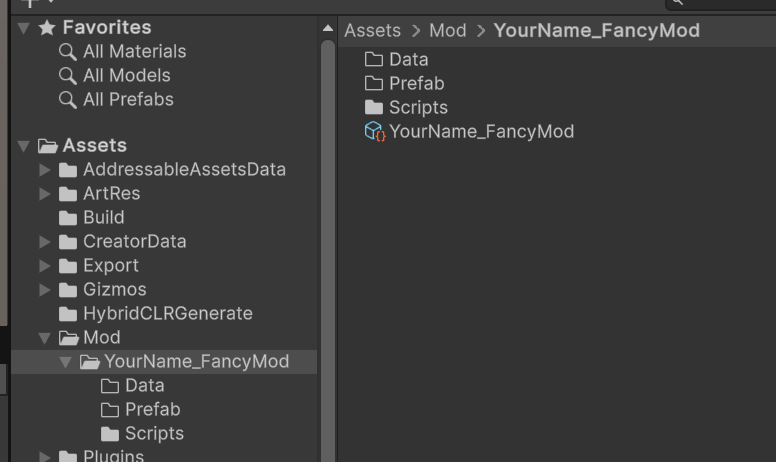
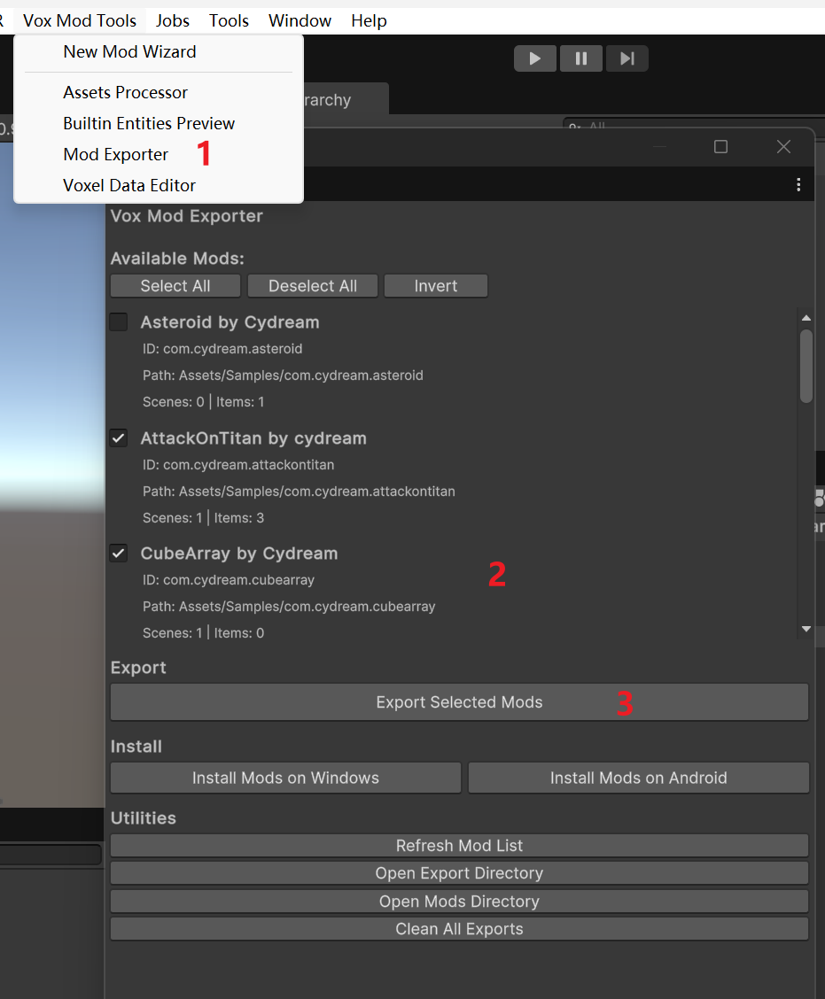

Creating Your First Mod
This guide will walk you through the process of creating, configuring, and exporting a new mod for Voxel Playground using the provided tools.
Step 1: Initialize a New Mod
Open the Mod Wizard in the Unity Editor.
Enter your desired mod name and click Create Mod.

Upon completion, a new folder structure for your mod will be automatically generated in the project.

Step 2: Understanding the Mod Structure
Your new mod folder contains essential directories for organizing your assets:
/(Root): Place your.voxmodel files here./Scripts: Place any custom C# scripts here./Prefab: Generated prefabs will be stored here (more on this in the Asset Import section).
Step 3: Configure Mod Manifest
Locate the ModManifest file within your mod folder. This file is crucial for defining your mod's metadata and export settings.

- Export Prefabs: You will need to assign the Prefabs you generate (from Vox files) to this list to ensure they are included in the final build.
Step 4: Building and Exporting
Once you have created your content (see Modding Guides for details on importing assets), you can export your mod.
Open the Mod Exporter window.
Select your mod from the list.
Click Build.
The compiled mod will be generated in the
/Assets/Exportdirectory.
From there, you can click Install to test it locally or package it for submission to mod.io.